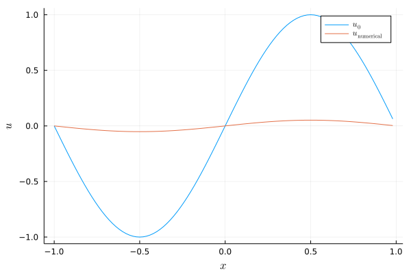

Linear advection diffusion equation with periodic boundary conditions
Let's consider the linear advection diffusion equation
\[\begin{aligned} \partial_t u(t,x) + a \partial_x u(t,x) &= \varepsilon \partial_x^2 u(t,x), && t \in (0,T), x \in (x_{min}, x_{max}), \\ u(0,x) &= u_0(x), && x \in (x_{min}, x_{max}), \\ \end{aligned}\]
with periodic boundary conditions. Here, a is the constant advection velocity and ε > 0 is the constant diffusion coefficient.
Basic example using finite difference SBP operators
Let's create an appropriate discretization of this equation step by step. At first, we load packages that we will use in this example.
using SummationByPartsOperators, OrdinaryDiffEq
using LaTeXStrings; using Plots: Plots, plot, plot!, savefigNext, we specify the initial data as Julia function as well as the spatial domain and the time span.
xmin, xmax = -1.0, 1.0
u0_func(x) = sinpi(x)
tspan = (0., 10.0)(0.0, 10.0)Next, we implement the semidiscretization using the interface of OrdinaryDiffEq.jl which is part of DifferentialEquations.jl.
function advection_diffusion!(du, u, params, t)
# In-place version of du = -a * D1 * u
mul!(du, params.D1, u, -params.a)
# In-place version of du = du + ε * D2 * u
mul!(du, params.D2, u, params.ε, true)
endadvection_diffusion! (generic function with 1 method)Next, we choose first- and second-derivative SBP operators D1, D2, evaluate the initial data on the grid, and set up the semidiscretization as an ODE problem.
N = 100 # number of grid points
D1 = periodic_derivative_operator(derivative_order=1, accuracy_order=4,
xmin=xmin, xmax=xmax, N=N)
D2 = periodic_derivative_operator(derivative_order=2, accuracy_order=4,
xmin=xmin, xmax=xmax, N=N)
u0 = u0_func.(grid(D1))
params = (D1=D1, D2=D2, a=1.0, ε=0.03)
ode = ODEProblem(advection_diffusion!, u0, tspan, params);ODEProblem with uType Vector{Float64} and tType Float64. In-place: true
timespan: (0.0, 10.0)
u0: 100-element Vector{Float64}:
-0.0
-0.06279051952931343
-0.12533323356430437
-0.1873813145857248
-0.24868988716485466
-0.30901699437494734
-0.3681245526846779
-0.42577929156507266
-0.4817536741017154
-0.5358267949789968
⋮
0.5358267949789968
0.4817536741017154
0.42577929156507266
0.3681245526846779
0.30901699437494734
0.24868988716485466
0.1873813145857248
0.12533323356430437
0.06279051952931343Finally, we can solve the ODE using an explicit Runge-Kutta method with adaptive time stepping.
sol = solve(ode, Tsit5(), saveat=range(first(tspan), stop=last(tspan), length=200));
plot(xguide=L"x", yguide=L"u")
plot!(evaluate_coefficients(sol[1], D1), label=L"u_0")
plot!(evaluate_coefficients(sol[end], D1), label=L"u_\mathrm{numerical}")
savefig("example_advection_diffusion.png");
Advanced visualization
Let's create an animation of the numerical solution.
using Printf; using Plots: Animation, frame, gif
let anim = Animation()
idx = 1
x, u = evaluate_coefficients(sol[idx], D1)
fig = plot(x, u, xguide=L"x", yguide=L"u", xlim=extrema(x), ylim=(-1.05, 1.05),
label="", title=@sprintf("\$t = %6.2f \$", sol.t[idx]))
for idx in 1:length(sol.t)
fig[1] = x, sol.u[idx]
plot!(title=@sprintf("\$t = %6.2f \$", sol.t[idx]))
frame(anim)
end
gif(anim, "example_advection_diffusion.gif")
end